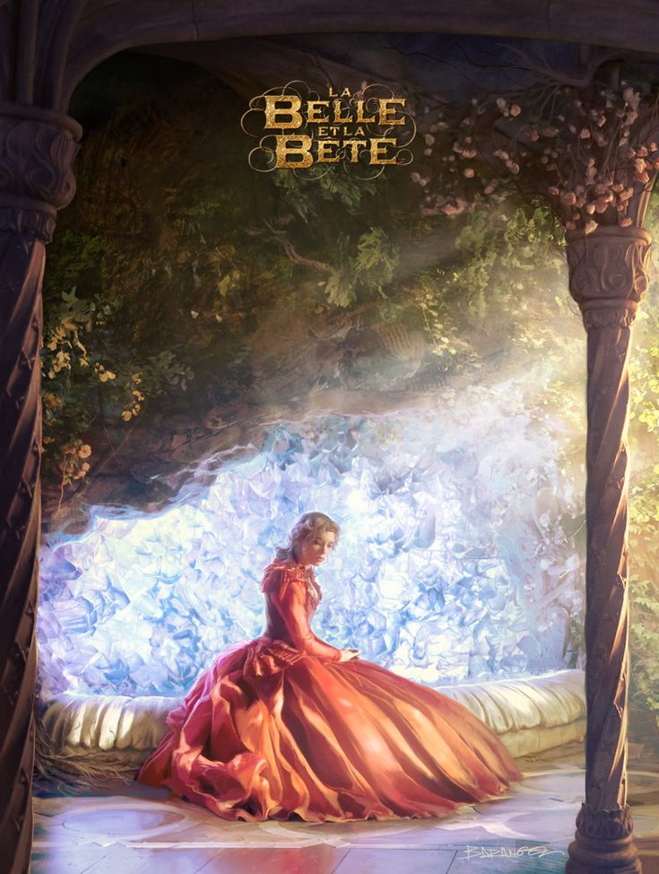

Empezaré a estudiar informática este año
Soy de Lima, Ate especificamente.
Me apasiona el baile y el diseño.
Peliculas favoritas

Bella y la bestia (2014)

Mean Girls

Kung Fu Panda 2
1. Una versión más fiel al cuento original, muy bonita estética.
2. Clásico, una sátira de lo que denominan despectivamente como chick flick, parodiando conscientemente los arquetipos femeninos.
3. En efecto, es cine. Excelente instrumental.
Mi top 3 música semanal


Top 5 bandas/cantantes favoritos
- BTS
- Kate Bush
- Paramore
- Armonia 10 de Walter Lozada
- Segundo Rosero